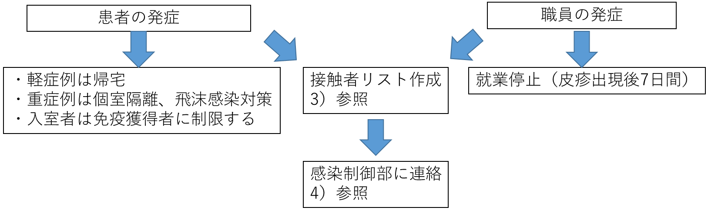
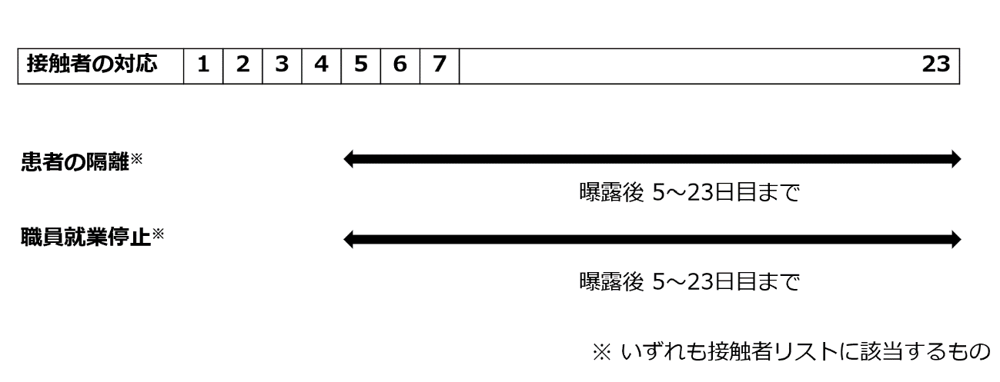

Ⅴ. 疾患別感染対策 5. 風疹（Rubella）
- 臨床
●潜伏期間：12～23日
●症状（図１）：耳介後部・後頭部・頸部のリンパ節腫脹が１～５日間先行し、軽度の発熱（50%例）と紅色の斑状丘疹（図２：70％例）で発症し４日間持続する。発疹は1～2日で顔面から頸部・体幹・四肢へと遠心性に広がり、出現順に３日で消失する。色素沈着を残さない。リンパ節腫脹は発疹期に著明で、５～８日間持続する。発疹を認めずウイルスを排泄する不顕性感染例が25～50％と多い。
●感染様式：鼻咽腔分泌物の飛沫感染（１ｍ以内）、接触感染
●感染期間：発疹出現の７日前から出現の7日後まで（14日間）
●治 療：対症療法のみ
●重症水痘：細胞性免疫低下患者の感染では、脳炎や肺炎、易出血性の合併症を併発する。
●先天性風疹症候群：最重要。妊娠初期（胎生3ヶ月以内）の母親の初感染で、難聴や先天性心疾患などが30～35％の確率で発症する
・妊婦へのワクチン接種は禁忌である。
- 院内感染対策
- 院内感染の予防策：ワクチンの項参照
- 発症時の対応：
- 院内感染対策
- 職員・患者共に発症が疑われた時点で感染制御部（内線5093）に連絡し、小児科、総合診療科または皮膚科を受診させる。

発症患者（疑い患者）が入院患者の場合は、直ちに個室に収容し患者及び家族に十分な隔離説明をする。- 接触者リストの作成及び抗体価測定：
- 発疹出現の7日前から発症者と密接な接触や近くで会話をした者をリストアップし、2回以上のワクチン接種歴が明らかではない者、過去に抗体価の検査を行っていない者についてはすみやかに抗体価を測定する（詳細はワクチンの項を参照のこと）。
- 2回以上のワクチン接種歴がある、または抗体価が上昇しているものは接触者リストから除外する。
- 接触の程度をランクA、Bの2段階にランク分けし、状況に応じて接触者を決定する。
ランクA（濃厚）： | 発症者に直接接触した者、5分以上会話をした者、1時間以上同室にいた者など。 |
ランクB（中等度）： | 会話はしていないが短時間同室にいた者。 |
接 触 者 の 範 囲
- 病棟での発生
入院患者、職員（医療者、派遣従業員）が発症した場合
ランクA、Bの職員ならびに入院患者
- 外来での発生
外来患者、職員が発症した場合
当該外来患者が受診、または外来職員が職務した外来診察室、外来待合ロビー、採血室、レントゲン室などの検査フロアで接触したランクA、Bの職員ならびにランクＡの外来患者。
- 感染制御部への連絡方法
下記時間帯に応じた責任者が、職員ならびに患者の感染の既往およびワクチン歴を聴取し接触者リストを作成し、感染制御部（内線5093）、または事務当直（内線5038）に連絡し、感染制御部スタッフに連絡する。
平日８：３０～１７：００：病棟師長、病棟医長、リンクナース、リンクドクター
平日１７：００～ ８：３０：当該科当直医、病棟看護師リーダー
土曜、日曜、祝日：当該科当直医、病棟看護師リーダー
- 抗体価測定のための検体採取方法
発症者、接触者の血液を血清分離剤入り試験管（緑のゴム蓋）に採血し部署でまとめて、測定者リストとともに感染制御部へ提出する（成人5 ml、小児2 ml）。
- 接触者の対応：
・ 接触後7日目から23日目までは、無症候性にウイルスを排泄する可能性がある。
・ 曝露後の抗体検査で抗体価が基準以下であった職員は、発症がない場合でも接触後7日目から23日目までは就業停止とする。

・ リンパ節腫脹などがあれば院内感染対策費で専門科を受診させる。- 接触者の発症予防策：
既往歴がなく抗体陰性の接触者への、ワクチン緊急接種や免疫グロブリン投与による発症予防効果は確認されていない。